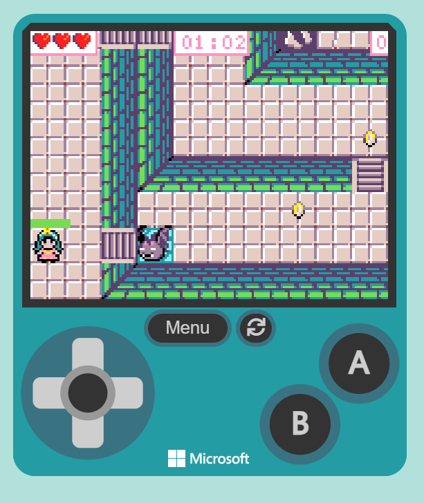

Nola jolastu
- Jokoa hastean, pertsonaia kontrolatzen duzu
Jokoa hasten denean, zuk pertsonaia nagusia kontrolatzen duzu. Pertsonaia hori izango da zure “avatarra”, eta bere bidez jokatuko duzu. Pantailan ikusiko duzu non dagoen eta zer egiten duen uneoro.
- Teklak erabiliz mugitu (aurrera, atzera...)
Pertsonaia mugitzeko teklatua erabiltzen da. Adibidez, aurrera joateko, atzera egiteko edo alde batera mugitzeko teklak sakatu behar dituzu. Horrela, mapan zehar ibili ahal izango zara eta leku berriak esploratu.
- Objektuak bildu behar dira
Jokoan zehar objektu desberdinak aurkituko dituzu. Objektu hauek garrantzitsuak izan daitezke, adibidez puntuak irabazteko, ateak irekitzeko edo maila pasatzeko. Horregatik, komeni da ikusitako objektuak jasotzea.
- Etsaiak saihestu edo garaitu
Bidean etsaiak agertuko dira. Batzuetan hobe da haiek saihestea, kalterik ez jasotzeko. Beste batzuetan, berriz, borrokatu eta garaitu egin behar dituzu aurrera jarraitzeko.
- Irteera aurkituAzken helburua mailako irteera aurkitzea da. Horretarako, mapa arakatu, objektuak bildu eta oztopoak gainditu behar dituzu. Irteera aurkitzen duzunean, maila bukatu eta hurrengora pasatuko zara.
|

|